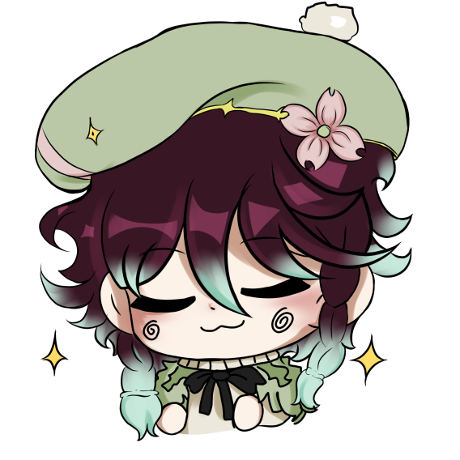
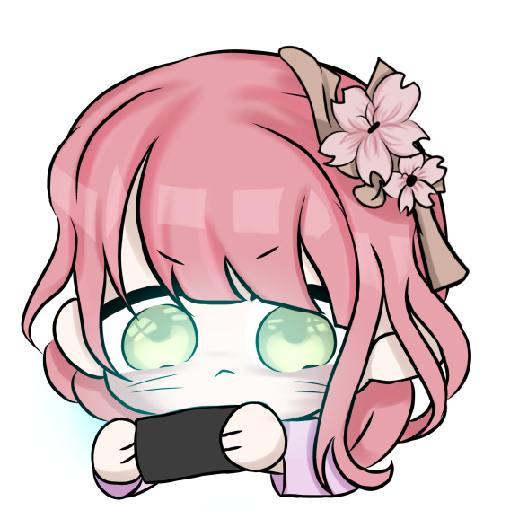

Criatividade que gruda. Soluções que impressionam.
A Chiclete nasceu da paixão por tecnologia, design e experiências envolventes. Somos uma empresa especializada no desenvolvimento de sites personalizados e jogos digitais, unindo criatividade, estratégia e inovação para transformar ideias em projetos memoráveis. Com uma equipe multidisciplinar formada por desenvolvedores, designers e criadores apaixonados, entregamos soluções digitais que prendem a atenção, como um bom jogo ou uma marca inesquecível — exatamente como um chiclete grudado na mente. O que fazemos: Desenvolvimento de Sites Criamos sites modernos, responsivos e otimizados, voltados para performance e experiência do usuário. De portfólios criativos a e-commerces robustos, desenvolvemos soluções sob medida para cada cliente. Desenvolvimento de Jogos Transformamos conceitos em jogos envolventes, desde projetos independentes até soluções gamificadas para empresas. Atuamos em todas as etapas: ideia, design, programação e publicação. Nosso propósito: Ajudar pessoas e marcas a se destacarem no mundo digital com projetos que grudam na memória, conectam, inspiram e entretêm.
Para representar esse espírito, temos dois mascotes que simbolizam quem somos:
- Chic: O programador incansável! Um chiclete quadradinho, curioso e cheio de ideias. Sempre com seu notebook na mão, ele é o mestre do código e da inovação. Representa nosso lado estratégico, técnico e criativo — o responsável por transformar ideias em realidade digital.
